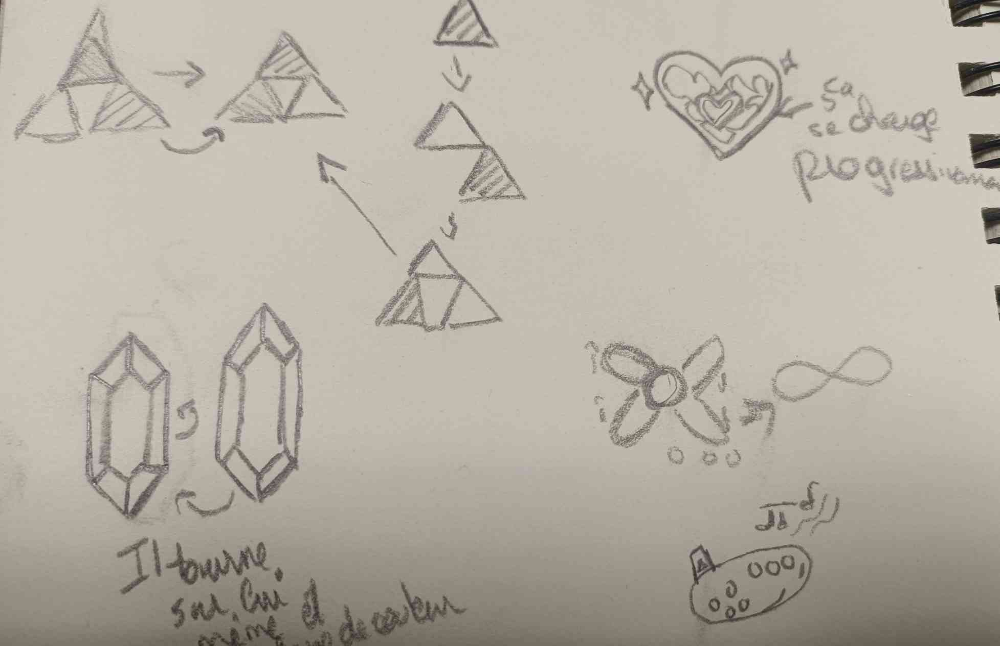

CHOIX DU PICTOGRAMME
J'ai souhaité créer une animation de chargement pour la licence de jeux The Legend of Zelda. Après avoir exploré différents symboles emblématiques de la série, j'ai choisi le rubis. Ce choix s'est imposé car le rubis, en tant que monnaie du jeu, est à la fois facilement reconnaissable et visuellement attrayant.